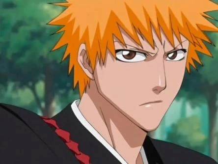
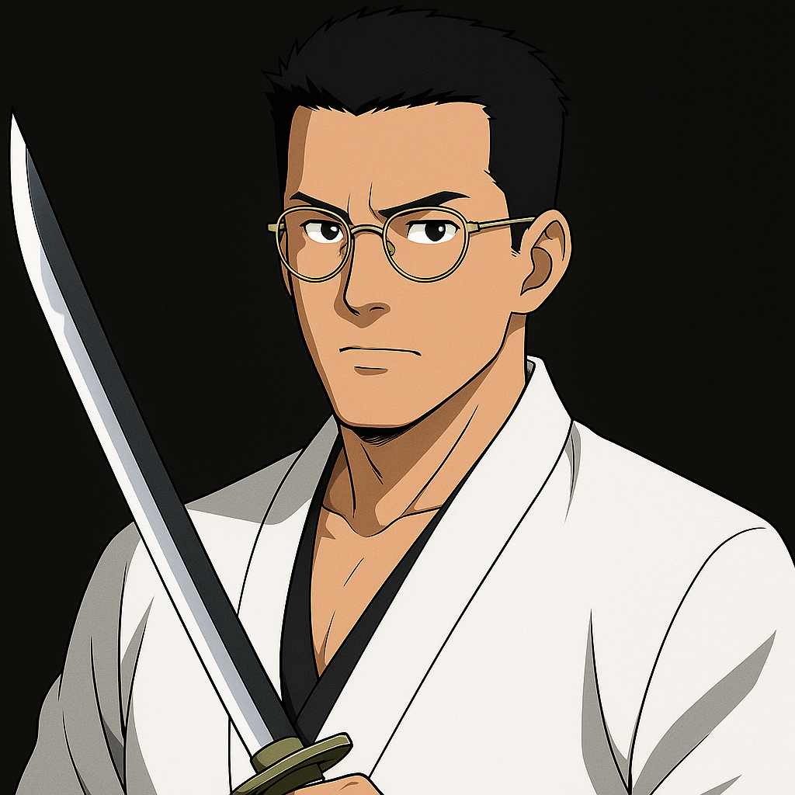
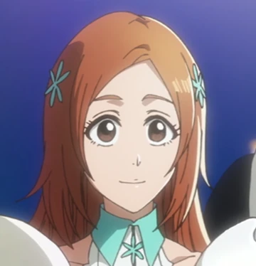
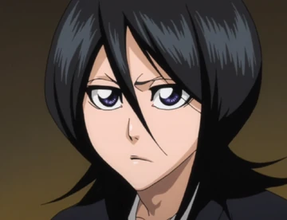
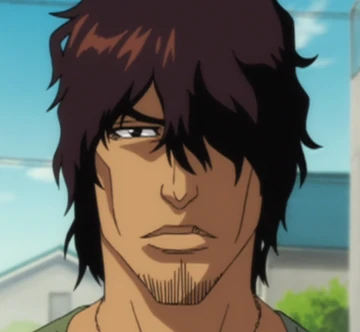
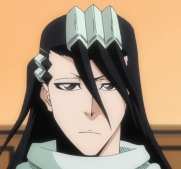
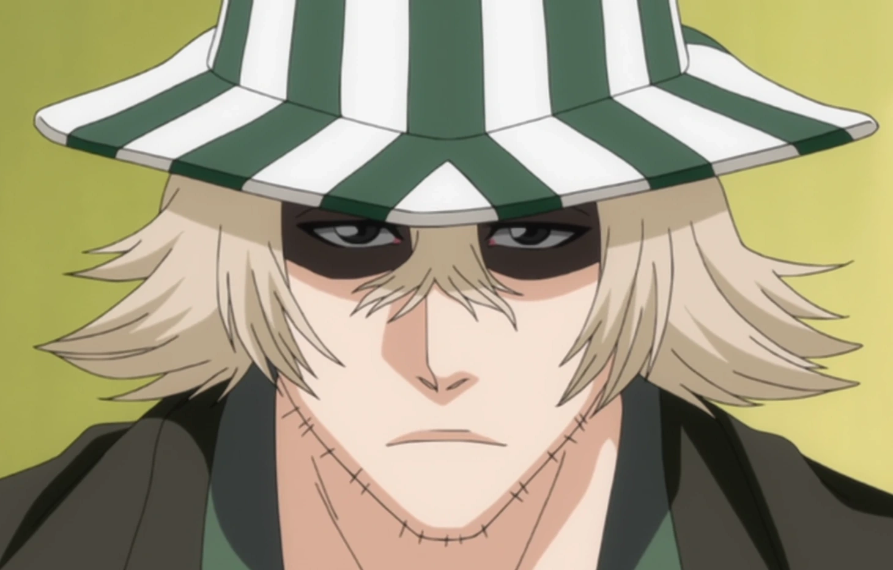
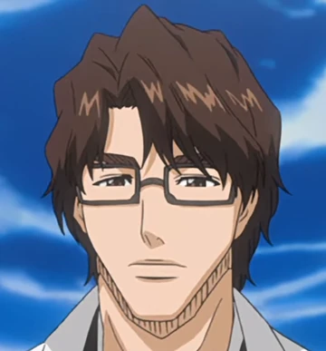

Personajes
Principales
Ichigo Kurosaki
Adolescente que puede ver espíritus y se convierte en Shinigami sustituto tras recibir los poderes de Rukia. Es valiente, impulsivo y siempre lucha para proteger a sus seres queridos. Su Zanpakutō es Zangetsu, una espada enorme siempre en forma liberada, y su Bankai, Tensa Zangetsu, concentra su poder en una katana negra que le otorga una velocidad y fuerza extraordinarias.
Takeshi Arakawa
Takeshi Arakawa fue un prodigio en el manejo del Hakuda y el Zanjutsu, reconocido por su temple y disciplina. Aunque reservado, se ganó el respeto en la Sociedad de Almas al liberar un poder único que pocos habían visto: su Bankai. Su Zanpakutō, Kage no Tora, adopta en Bankai la forma de un gigantesco tigre espiritual hecho de reiatsu plateado, llamado Kuroi Byakko. Al activarlo, el tigre envuelve a Takeshi con una armadura espiritual que incrementa su fuerza y velocidad a niveles sobrehumanos. El rugido del tigre no solo libera ondas expansivas que destrozan el entorno, sino que además desorienta al enemigo al hacer vibrar su energía espiritual. Se dice que quienes lo enfrentan sienten que están dentro de una jaula invisible de garras que se cierran lentamente sobre ellos. Con su Bankai, Takeshi no solo combate, sino que también protege: jura usar el poder del tigre para mantener el equilibrio entre mundos y evitar que la oscuridad devore a los inocentes.
Orihime Inoue
Compañera de Ichigo, alegre y bondadosa, con un profundo sentido de la amistad. Aunque no posee Zanpakutō ni Bankai, desarrolla el poder de los Shun Shun Rikka, seis espíritus que le permiten rechazar heridas, ataques o incluso fenómenos, funcionando casi como una alteración de la realidad.
Renji Yaku

Teniente de la Sexta División, leal amigo de Rukia y rival convertido en aliado de Ichigo. Es impulsivo, pero también muy comprometido con sus ideales. Su Zanpakutō es Zabimaru, una espada segmentada que se extiende como látigo, y su Bankai, Sōō Zabimaru, invoca una serpiente espiritual gigante que evoluciona en la guerra final, haciéndose más estable y poderosa.
Rukia Kuchiki
Shinigami de la familia Kuchiki, hermana adoptiva de Byakuya, quien da inicio a la historia al ceder sus poderes a Ichigo. Es seria y responsable, aunque con gran sensibilidad. Su Zanpakutō, Sode no Shirayuki, es famosa por su elegancia y poderes de hielo. Su Bankai, Hakka no Togame, congela todo lo que toca, incluido el aire, aunque es tan peligroso que debe usarse con precaución.
Uryū Ishida

Orgulloso descendiente de los Quincy, compañero de clase de Ichigo y rival que termina siendo aliado. Es calculador, meticuloso y maneja el arco espiritual con gran maestría. No posee Zanpakutō ni Bankai, ya que sus poderes son Quincy. En la guerra final recibe la habilidad Antithesis, que le permite invertir el estado de dos objetos o personas.
Yasutora Sado
Amigo inseparable de Ichigo, de carácter tranquilo y noble, pese a su imponente físico. No es Shinigami, por lo que no posee Zanpakutō ni Bankai, pero desarrolla un poder único: sus brazos se transforman en armas espirituales, el Brazo derecho del Gigante para defensa y el Brazo izquierdo del Diablo para ataque, con una fuerza devastadora.
Byakuya Kuchiki
Capitán de la Sexta División, noble y serio, cuya vida está regida por el honor y el deber. Aunque distante, siente un profundo cariño por Rukia. Su Zanpakutō es Senbonzakura, que en Shikai se fragmenta en miles de cuchillas con forma de pétalos. Su Bankai, Senbonzakura Kageyoshi, multiplica aún más este poder, creando mares de pétalos cortantes controlados con precisión letal.
Kisuke Urahara
Ex capitán de la Duodécima División y actual dueño de una tienda en el mundo humano. Es un genio inventor, estratega y uno de los personajes más enigmáticos. Su Zanpakutō es Benihime, capaz de lanzar ataques de energía y barreras protectoras. Su Bankai, Kannonbiraki Benihime Aratame, invoca a una figura femenina gigante que puede reconstruir o desarmar todo lo que toca, incluso cuerpos o estructuras.
Sousuke Aizen
Ex capitán de la Quinta División, inicialmente respetado y carismático, pero en realidad un manipulador que busca convertirse en un ser supremo. Su Zanpakutō es Kyōka Suigetsu, cuyo Shikai controla los cinco sentidos del enemigo, creando ilusiones perfectas imposibles de detectar. Su Bankai nunca se ha revelado, lo que aumenta aún más su misterio y poder.
Kempachi Zaraki

Capitán de la Undécima División, amante de la batalla y de enfrentarse a los oponentes más fuertes. Vive para luchar y mide su respeto en base a la fuerza de sus rivales. Su Zanpakutō inicialmente no tenía nombre, reflejo de su descontrol. Más adelante libera su Bankai, transformándose en un ser demoníaco de piel roja y fuerza descomunal capaz de partir casi cualquier cosa, aunque con un gran costo físico.